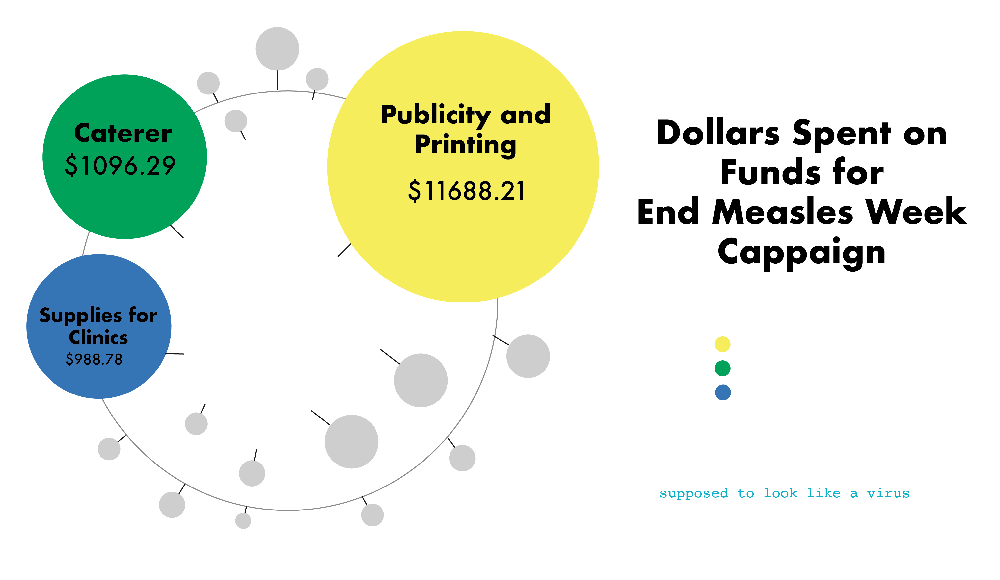
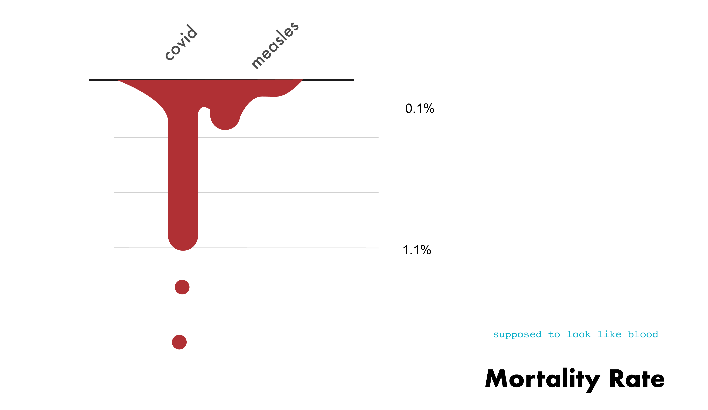

Using the data, we tried to create some sample charts that would collect the data
regarding measles and COVID. The COVID results would be collected from the NYT Times
collected
Providence Data. Meanwhile, the measles data was a combination of the paper and the CDC factual
data regarding the mortality of measles.
Separating the information into different tabs, we created a series different graphs that make
out the information of this piece.
Using the data, we first created these charts that became interactive and that would jump out. We focused on the data -- rather than the visualization. This critique became the next step in understanding the next process.
We created some charts that took visual creativity. One graph would look like a virus, and the other would look like blood dripping. The illustrative nature of the graphs allowed for a more humane design than the cold informative bar graphs.
 We then created interactive graphs and animated images to increase the level of interactivity within the pieces.